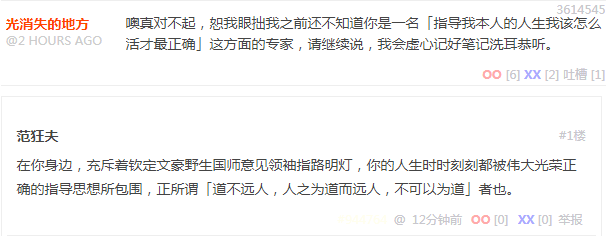

时间还早，再开一篇。首先从「人之患在好为人师」开始：

人之患在好为人师
对于「孟子他老人家教导我们说」的这句至理名言，王勉注之曰：「学问有余，人资于己，以不得已而应之可也。若好为人师，则自足而不复有进矣，此人之大患也」。翻译成现代汉语普通话就是：「求知、求学的目的在丰富自我，不得已的情况下才拿出来应对他人，如果喜欢作别人的老师，就容易自我满足而不求进步，这就是人的最大毛病了」。
更何况，我中华兲朝上国当今圣兲子在位，河清海晏歌舞升平，坚持依法治国原则不动摇，有法可依有法必依执法必严违法必究，全面深化「教师资格证」改革，从仅面向「非师范类」专业改为所有专业，从教师资格终身制铁饭碗改为五年一审持证上岗。
那么，以「革命导师」之类头衔，动辄长篇大论谆谆教导人民群众，把「讲义」散发得全球都是，要求「全面学、系统学、深入学，带着信念学、带着感情学、带着使命学、带着问题学」的家伙，包括但不限于钦定文豪野生国师意见领袖指路明灯，有没有「党性坚定的老审查员」负责审核其「教师资格证」有效性呢？
所以，在我已经上传的三点五篇设定正文当中，第一篇有「讲师」「助教」，第二篇有「教官」，第三篇有「牧师」「律师」「禅师」，第四篇刚出现「图书馆管理员」。对比其它码字巨侠的作品，这就叫「身正不怕影子斜」「打铁必须自身硬」……什么的。
言归正传，开始注释正文。
第一个场景，体现了没有任何前奏而莫名其妙入学的汉斯那「刘姥姥进大观园」式「少见多怪」。前面提到了，与「来历不明」的范书藤一样，这「忽然走了狗屎运」的汉斯也设定为疑似「摔」出来的「头胎」。就是说汉斯的人生本来平平淡淡波澜不惊，然后不知咋的有个革命任务就落到头上了，还非他不可。
和后面相呼应，「组织」决定不需要汉斯知道的信息，不会有任何人告诉汉斯知道，而「其它组织」更是没这个义务并且通常借助这种信息不对称在各种场合保持对汉斯的行动优势，这也和东方题材网文当中描述的「门派」情况一致。
所以，当得知自己在军校就读居然接触不到军事类课程，汉斯的愤怒可想而知。这里的「愤怒」也体现了平民出身的汉斯那不成熟的一面，换成我中华兲朝上国那些家学渊源的啥色基因，比如朱由校同志，都知道虽然自己血统高贵钦定接班，但是进了宫之后在观望期也应该自备饮食夹起尾巴做狗。
下面一句，蒂罗尔的情况前面注释过了，这里略过。汉斯模模糊糊获得的信息也就是结合那些公开的政治军事形势，知道「家」里情况不妙，还有一个失散已久从未谋面钦定接班的「哥哥」。这也和我中华兲朝上国的政治现实保持一致，豪门贵种走兽派到处杜鹃下蛋塞野种。哪怕参考西幻题材网文大作如《超凡贵族》也知道，「封臣」是接盘侠候补，岗位责任之一就是与主子身边那些肚子里面已经孕育着「贵种」的「婢」举行隆重的婚礼。
再下面一句，汉斯对「猴拳」的怨念，一方面因为这种体术确实有些搞笑，另一方面还是因为哪怕「不传出去」，在校内仍然有人笑话。毕竟看到「技战术」这个字眼也能理解，军校专业当中，专精「技术」的是「兵」，而掌握「战术」的是「官」，虽然都有「手册」可供照搬。而学生的年纪还没到能理解「战略」的程度，提前教授也是死记硬背居多。
于是，很明显笑话汉斯的那些「大少爷同学」是钦定当官的家伙，用不着学「技术」，而汉斯自己则是前面提到的九省通衢「军网最黄黄网最军」论坛上面疑似军二代嘴里嘲弄的「贱种军户」。也就是我中华兲朝上国那发达的伦理学传统当中，所谓「君子劳心，小人劳力」「劳心者治人，劳力者治于人」的指导原则。所以，在这个背景之下，这段描写就有了合理性：汉斯受到的这种压力又不能在校内释放出来，只能期待不要传出去让「别人」也笑话。
再下面一句，「侍从」的态度「见怪不怪」，回答也是「官腔」，体现了我中华兲朝上国各种规章制度密不透风的特点。至于这些规章制度是否仅仅是纸面上的油墨，实际执行中则坚持「刑不上大夫，礼不下庶人」的「具体情况具体分析」的「灵活」处理，现实情况我们都知道了，后面在正文里面也表现出来了。
而「只要您不主动对外透露」这句，其实是影射了我中华兲朝上国民间故事「不怕我说就怕你说」：
在一个月黑杀人夜风高放火天，荒郊野外古庙当中，钦定主角龙傲天看着同伴财货，一时怒从心头起恶向胆边生。谋财害命之后心里有鬼，于是冲着佛像祈祷。佛像忽然显灵开口，「不怕我说就怕你说」。钦定主角惊诧之余喜出望外，卷款跑路拍屁股走人，从此在修真道路上一路顺风，过上了人生赢家的幸福生活。
很久以后，钦定主角前呼后拥故地重游，酒酣耳热之时得意忘形肆无忌惮，指着佛像说段子，「这佛像会讲话你们信不信啊」。当然都不信。于是钦定主角不打自招，把当年原始积累时期第一桶金的典故一说。结果同行者当中就有苦主后人，于是「有法可依有法必依执法必严违法必究」了也。
肯定很多读者奇怪，虽然前面解释了「预言系」法术的原理，但是被堵在家里还动辄钦定死机，从哪里获得那么多信息呢。很简单，以前在各个站点扯淡的时候也说过了，就是「不怕我说就怕你说」的典故。没有那么多豪门贵种走兽派指使的灌水机到处不打自招，包括但不限于专门追着我喷顺便炫耀自家主子「有钱就是可以为所欲为.gif」的性福生活，我还不至于「预言」得这么精确呢。
接下来一句，「堵不住大少爷同学的嘴」，也是现实，稍微有点网龄的网友都能理解。先不提那些「军事爱好者」爆料的「官泄」，就是其它官方绝不会承认的涉及黑幕阴私的内容，也有得是「业内」爆料。并且，哪怕是纯属民间个人之间的交流，只要大少爷好奇，就有的是官方「狗仔队」使用合法或非法的各种手段打探消息。
我就举一个与自己有关的当代网友肯定会非常感兴趣的例子，「情商负无穷」的我不怕得罪人，只怕得罪人不够多。作为「孤苦伶仃可怜废柴草根文盲矬胖老穷光棍汉」，并不是从来没有与异性「亲密接触」过。只不过呢，这种多年前亲密接触的「细节」，不知咋的就被曾经在九省通衢「军网最黄黄网最军」活跃的灌水机获得了，并且以各种形式塞到我眼皮底下让我知道。
简单说，「亲密接触」并非一帆风顺，对手一边展现热情一边阻挠我展现热情，在交流当中涉及了各种柔道「寝技」相关体术。好不容易把对手翻过来按住了，每次刚把对手屁股抬起来，对手就趴下去，重复若干次。然后把对手双臂扳到身后单手抓住，继续攻略屁股，又是失败了若干次。当时情商为负数但还没到负无穷的我，放弃了。
这个场景对我的影响，涉及到后来欣赏有悖于社会主义精神文明建设但人民群众喜闻乐见的视频题材之选择。回忆了一下，最感兴趣的不是本番而是前奏，通常镜头焦距合适，画面上只有一个屁股，画面外伸过来若干只手，使用各种道具运用各种技巧，遍历各种器官和软组织。必须承认，职业人士就是敬业，想像力和行动力都值得肯定。
至于出品方，以欧美居多，毕竟当地法律规定只有分级制度没有高斯模糊。演员选择几乎都是白皮，这并非种族歧视，而是纯粹唯物主义的光学原因：黑皮看不清楚。后来在以某ACG论坛为根据地的部分视频爱好者努力之下，岛夷那发达的视频产业逐步影响到我中华兲朝上国网络用户，其中也包括我在内。
只不过，岛夷法律规定了高斯模糊条款，于是导演将剧情重点放在「有东瀛特色的绳艺」之上，包括但不限于「后手缚」，这时候虽然主演的屁股还是屹立于画面正中央并伴随着各种信号处理当中的噪声，但导演会经常以蒙太奇手法切换到面部特写，以展现经过编剧精心润色的台词。有些复杂的体术和绳艺的想像力对演员行动力要求较高，于是行动力趋向正无穷的的二次元作品开始流行。
过程差不多就是这样。前面说过了一直广泛阅读，到了年满三十岁（2008年底）之后有一种融会贯通的感觉，更加关注那些学术类型的内容，于是相应的在生活中不再欣赏相关视频作品。并且我所欣赏过的视频当中，并没有出现当初亲密接触的几个独特细节。
那么，十八个大以来在「军网最黄黄网最军」论坛爆料的内容中，出现了理论上只有两个人知道的「国家机密或宇宙奥秘」，还不涉及曾经欣赏过的那些视频。我又没有不打自招，那么只剩下一种可能了也。至于当年亲密接触的「对手」是主动爆料还是遭遇了我中华兲朝上国豪门贵种走兽派豢养的鹰犬爪牙的刑讯逼供，我还等着灌水机继续不打自招呢，没想到「军网最黄黄网最军」论坛没了，遗憾吖。
回到正文，接下来一句，「大纲上每门课都有用」，在这里是影射源自普鲁士的德国教育体制那培养革命螺丝钉的路线，也能体现我中华兲朝上国上世纪五十年代按照苏联教育体制进行的「院系调整」方针：不存在什么培养革命导师圣卡尔宣称的「人的自由而全面的发展」的综合性大学，只有各种专业院校。在境内知名度最高的例子，就是「TOP2」，北大工科全没了，清华文科理科全没了。
再下面一句是补充说明，前面注释德国学制的时候已经提到了，「综合中学」毕业生只能上「大专」，而第一篇设定的主角范书藤则是从「文理中学」考上了「大学」。这就是一个隐含的设定，军校属于专业院校，不提供与军事无关的课程，军队只要关心「能打仗敢打仗打胜仗」就可以了也，军人不允许拥有自己的思想。这种建军原则出现在普鲁士/德意志、苏联/华约，以及我中华兲朝上国，并不奇怪，所以这个设定的合理性显然存在。
再下面一句，「侍从」说接受的教育与汉斯并不一致，则是暗示了「奴才」只能上「国民中学」然后上「中专」「职高」，这也是培养特种行业人士的方式。这不是影射既存的各种职业学校，也是全面深化教育体制改革之后涌现出来的时代特色。读者可以参考我中华兲朝上国前几年网络上出现的各种「管家学校」，或者日本一直存在的只招收女生的「家政职高」。
接下来汉斯开始「冷笑」并且「声音提高了很多」，因为即便是合理的教学大纲，对他也不公开，迄今为止只接触到了「猴拳」，于是可以合理的怀疑自己被耍了或者是其它什么原因。后面若干场景当中也提到了，每次都是课到临头汉斯才知道，没什么预习或准备工作的可能。
再然后「波岑子爵阁下」的称呼出场，前面注释过了。而「教官」的表情「似笑非笑」，一方面体现了「校方」真的是把汉斯当猴耍，另一方面也和设定中教官原型当中那来自「Johnny」的人设中性格特点挂钩，各位回顾前一篇注释当中那个视频就明白了「借鉴」挪用的必要性了。
至于军校学生肩章一律白板看见谁都要敬礼，就不是设定，我中华兲朝上国现在也这样，只不过肩章不是白板是红板罢了。
最后两句，提到了「会话时间」和酷似监狱探亲室的「会话室」，也是设定中「邦联」军校特色，前面注释过了。而「泄露国家机密」的罪名，则是影射我中华兲朝上国当中凡是党政军各级机构公开传达的印刷品照样有密级连鸡毛蒜皮也不例外这个现实。
总之，第一个场景继续把极简主义风格贯彻落实，省略了所有可以省略的其它描写。